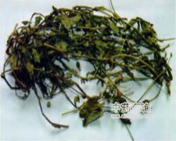

一点红

拼音
Yì Diǎn Hónɡ
别名
红背叶、叶下红、羊蹄草
来源
为菊科一点红属植物一点红Emilia sonchifolia （L.）DC.，以全草入药。夏、秋采收。
生境分布
生长于村旁、路边、田畦或旷野草地上。分部于江西、福建、湖南、广西、广东、贵州、云南等省区。
药材特点
一年生或多年生草本，高10-70厘米。茎直立，无毛或被疏毛，时有分枝。茎下部的叶片长5-10厘米，通常卵形，琴状分裂或具钝齿，上部的叶小，通常全缘，基部耳状，多少抱茎，无柄，叶背常为紫红色，故别名红背叶。花期长，春末至冬初开放，头状花序，长12-14毫米，具长柄，花枝通常二歧分枝。总苞绿色，圆柱状，基部稍膨大，苞片1列，约与花冠同长；花紫色，全为两性管状花，花冠先端5齿裂。瘦果圆柱形，长约4毫米，有棱，冠毛白色，柔软。
性状
无性状数据
性味
苦，凉。
功能主治
清热解毒，散瘀消肿。上呼吸道感染，咽喉肿痛，口腔溃疡，肺炎，急性肠炎，细菌性痢疾，泌尿系统感染，睾丸炎，乳腺炎，疖肿疮疡，皮肤湿疹，跌打扭伤。
用法用量
0.5-1两；外用适量，鲜品捣烂缚患处。
化学成分
据报道叶显黄铜甙、糖类的反应。全草尚显生物碱及酚类的反应。
药理作用
1：抑菌试验：本品煎剂：对溶血性金黄色葡萄球菌有抑制作用
摘录
《全国中草药汇编》